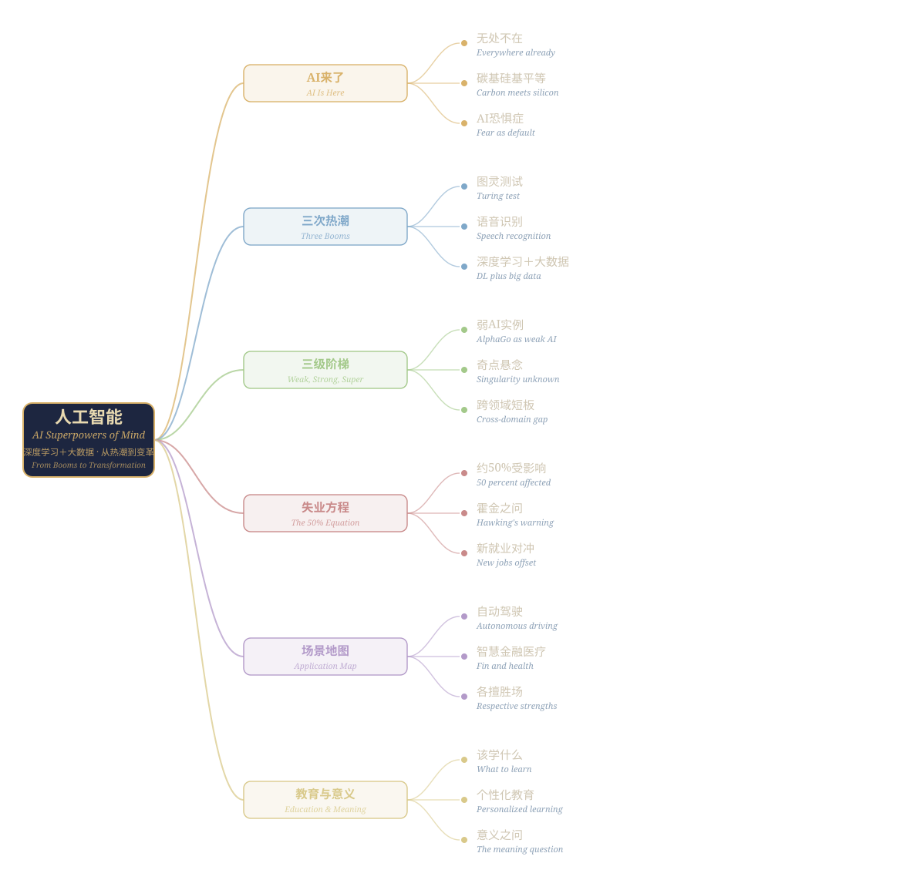

人工智能
〇 · 书籍信息
基本信息
| 总纲 | 第一章开篇即定调：「人工智能已经来了，而且它就在我们身边，几乎无处不在」——全书六章是一条从「是什么」到「怎么办」的完整动线：来了→复兴→人机大战→时代变革→创新创业→教育与个人发展 |
|---|---|
| 主公式 | 第二章章名就是全书的技术底座：「AI复兴：深度学习＋大数据＝人工智能」——第三次热潮与前两次的本质区别在此：不是理论翻新，是算法遇上了互联网规模的数据 |
| 关键数字 | 「我的预测是，约50%的人类工作会受到人工智能的影响」——第四章用自动驾驶、智慧金融、智慧医疗、艺术创作四大场景验证这个数字的落点 |
| 一句话 | 这是一本把「AI焦虑」翻译成「AI行动清单」的书：弱人工智能是今天的现实，强人工智能是明天的悬念，而教育与个人发展是你今天就能做的准备。 |
一 · 核心主题总览
这本六章小书的四条主线：① 三次热潮一张表
AI不只有一次浪潮：「图灵测试与第一次AI热潮」「语音识别与第二次AI热潮」「深度学习携手大数据引领第三次AI热潮」——书用三波对照破除「AI一夜爆发」的错觉：每一次热潮背后都有被低估的前夜，每一次寒冬都藏着下一次复兴的种子。
② 弱·强·超三级阶梯
概念的分级是判断力的地基：「AlphaGo是弱人工智能的一个最好实例。AlphaGo在围棋领域超越了人类最顶尖选手」——但围棋是一维的封闭问题；弱AI是今天的现实，强AI与超AI是逻辑推演：分清三级，才不会被科幻叙事带跑。
③ 50%的失业方程
全书最锋利的数字：「我的预测是，约50%的人类工作会受到人工智能的影响」——但书同时引霍金的担忧又给出对冲：「同时也会制造出足够多的新的就业机会」——受影响不等于被消灭：方程式的解法在第六章的教育与转型里
④ 中国机会
视角落地的位置：第五章「AI是中国创新、创业的最好机会」与「创新工场的AI布局」——作者是投资人：全书对场景的挑选（自动驾驶、智慧金融、智慧医疗、智慧生活、艺术创作）本身就是一张投资地图
二 · 第一段 AI 来了 —— 无处不在与三级阶梯—— 图灵 · ELIZA · 弱强超 ——
无处不在的人工智能
第一章把AI从实验室拉回日常：「人工智能已经来了，而且它就在我们身边，几乎无处不在」——手机的语音助手、新闻推荐、人脸识别、机器翻译都是AI的日常形态；书的策略是先破「恐惧」再立「认知」：科幻巨匠克拉克的「碳基硅基应互相尊重」是开篇的第一句引文——技术叙事从平等想象开始，不从末日想象开始。
◆ 语言学习 · 概念 · 无处不在
| 无处不在 | AI的日常化程度：你用的时候不知道在用 |
|---|---|
| 碳基/硅基 | 克拉克的平等想象：生命形态不决定尊重份额 |
| AI恐惧症 | 「许多人就又不约而同地患上人工智能恐惧症」 |
| 无处不在→看不见 | 好技术的终局是隐形：基础设施化 |
句型 ｜ 「人工智能已经来了，而且它就在我们身边，几乎无处不在。」——科普书的第一句应该这样写：先宣布现状，再讨论未来——AI不是「将要来」，是「已经来」。
图灵测试与三级阶梯
什么是AI？书给出一个分级框架：弱人工智能——单一领域的专用智能；强人工智能——跨领域的通用智能；超人工智能——全面超越人类。第三级对应「奇点」：「未来学家和科幻作者喜欢用『奇点』来表示超人工智能到来的那个神秘时刻」——但书的态度清醒：「没有人知道奇点会不会到来，会在何时到来」——AlphaGo赢了李世石，也仍然是弱AI的胜利：一个领域的满分不等于所有领域的及格。
◆ 语言学习 · 概念 · 分级
| 弱人工智能 | 专用智能：围棋满分，跨领域零分 |
|---|---|
| 强人工智能 | 通用智能：像人一样跨领域推理 |
| 超人工智能 | 超越人类：目前只是逻辑推演 |
| 奇点 | 「没有人知道奇点会不会到来」 |
习语 ｜ 「没有人知道奇点会不会到来，会在何时到来。」——科普的诚实句式：把科幻的悬念还给科幻，把可讨论的现实留在当下。
三 · 第二段 复兴密码 —— 深度学习＋大数据—— 图灵测试 · 语音识别 · AlphaGo ——
三波热潮的接力
第二章的标题本身就是公式：「AI复兴：深度学习+大数据=人工智能」——三次热潮各有引擎：第一次靠图灵测试点燃想象，第二次靠语音识别落地场景，第三次靠「深度学习携手大数据」全面铺开；书对历史的态度是对照式的：每次热潮的技术内核不同，但公众的认知曲线惊人相似——先是惊叹，然后恐惧，最后习惯。
◆ 语言学习 · 概念 · 三次热潮
| 第一次热潮 | 符号主义与图灵测试：从0到1 |
|---|---|
| 第二次热潮 | 统计方法与语音识别：从1到场景 |
| 第三次热潮 | 深度学习＋大数据：从场景到基础设施 |
| 热潮循环 | 惊叹→恐惧→习惯：公众认知三段式 |
句型 ｜ 「深度学习携手大数据引领第三次AI热潮。」——公式即章名：算法是引擎，数据是燃料——单独任何一个都点不着火。
AlphaGo 的启示
第三章用一场对局讲透弱AI的能与不能：「普通公众对人工智能快速发展的认知，始于2016年初AlphaGo的惊世对局」——「AlphaGo在围棋领域超越了人类最顶尖选手」；但书的追问更有价值：「AlphaGo带给人类的启示究竟是什么？」——启示不在机器会下棋，而在机器学会了人类说不清的策略：50%胜率的落子为什么最优，机器说不清，人类也算不清——可解释性成了新时代的问题。
◆ 语言学习 · 概念 · 黑箱
| 惊世对局 | 2016李世石五番棋：公众认知的分水岭 |
|---|---|
| 弱AI实例 | 「AlphaGo是弱人工智能的一个最好实例」 |
| 策略学习 | 机器会用，但说不清为什么用 |
| 启示 | 不是「机器赢了」，是「学习方式变了」 |
习语 ｜ AlphaGo赢了，但它是弱AI——围棋的满分不等于跨领域的及格。——判断AI新闻的过滤器：看到「AI超越人类」先问一句：在哪个领域？封闭还是开放？
四 · 第三段 变革版图 —— 50% 与落地场景—— 失业方程 · 四大场景 · 中国机会 ——
50%的失业方程
第四章先摆最尖锐的问题：「我的预测是，约50%的人类工作会受到人工智能的影响」——霍金的版本更冷：「工厂自动化已经让众多传统制造业工人失业，人工智能的兴起很有可能会让失业潮波及中产阶级」——书的对冲不是安慰，是历史参照：电报行业被取代时，人们相信新技术的优越性——「同时也会制造出足够多的新的就业机会」：受影响≠被消灭，转型成本才是真正的变量。
◆ 语言学习 · 概念 · 受影响
| 约50% | 受影响工作的粗估：影响不等于消灭 |
|---|---|
| 霍金之问 | 失业潮波及中产：自动化阶梯向上爬 |
| 电报参照 | 新技术替换旧岗位的历史轮回 |
| 新就业机会 | 对冲项：转型成本与时间差是关键 |
句型 ｜ 「我的预测是，约50%的人类工作会受到人工智能的影响。」——数字的用法示范：给区间不给判决——50%是「受影响」，不是「被失业」：读科普先看清楚谓语。
四大落地场景
第四章的目录就是一张投资地图：「自动驾驶：AI最大的应用场景」「智慧金融：AI目前最被看好的落地领域」「智慧医疗：AI将成为医生的好帮手」「艺术创作：AI与人类各擅胜场」——场景的排序暗含确定性梯度：自动驾驶数据最多场景最闭环，金融先落地因为数字原生，医疗是辅助定位而非替代定位，艺术创作是人类的保留地——AI与人类各擅胜场不是客气话，是场景筛选的结论。
◆ 语言学习 · 概念 · 场景地图
| 自动驾驶 | 「AI最大的应用场景」：数据与闭环双全 |
|---|---|
| 智慧金融 | 「目前最被看好的落地领域」：数字原生 |
| 智慧医疗 | 好帮手定位：辅助而非替代 |
| 各擅胜场 | 艺术创作的分工：AI有形式，人类有缘由 |
习语 ｜ 「艺术创作：AI与人类各擅胜场。」——场景判断的分界线：有标准答案的归机器，需要缘由和意义的归人——这也是职业选择的分界线。
中国机会与创新工场
第五章把地图缩到中国：「AI是中国创新、创业的最好机会」——理由是三重叠加：市场大、数据足、政策顺；「创新工场的AI布局」给出投资人的具体打法；书的姿态是务实乐观：不谈概念谈布局——第四章的场景清单＋第五章的布局清单，构成从「看懂」到「行动」的通道。
◆ 语言学习 · 概念 · 中国机会
| 最好机会 | 市场·数据·政策三重叠加 |
|---|---|
| 创新工场 | 作者的投资实践：从看懂到布局 |
| 大时代大格局 | 第五章起手式：技术浪潮配市场纵深 |
| 务实乐观 | 不谈概念谈清单：科普的下半场是行动 |
句型 ｜ 「AI是中国创新、创业的最好机会。」——投资视角的落点：技术窗口期＋市场纵深＝时间差红利——窗口期不等人。
五 · 第四段 迎接未来 —— 教育与个人发展—— 学什么 · 怎么学 · 意义何在 ——
AI时代该学什么
第六章把答案落到个人：「AI时代该如何学习？」「AI时代该学什么？」——书给出的方向是：重复性工作最容易被自动化，所以学习要从「与机器比效率」转向「做机器做不了的事」：跨领域推理、常识、审美、协作——「这可以让那些高级人才将更多的时间」投入创造性工作：自动化的另一半礼物是时间，能不能接住，看学习结构。
◆ 语言学习 · 概念 · 学习结构
| 重复性工作 | 最容易被自动化：学习的下限警钟 |
|---|---|
| 跨领域 | 弱AI的短板：人类学习的加分项 |
| 高级人才时间 | 自动化解放出的时间：流向创造性工作 |
| 人机分工 | 效率归机器：缘由与意义归人 |
句型 ｜ 重复性最容易被自动化——学习结构的升级方向是机器做不了的事。——个人策略三问：我的工作有多重复？我的判断机器能不能替？我的时间自动化后流向哪里？
教育的变革实验
第六章用密涅瓦大学讲教育的新形态：「沉浸式全球化体验」——「学生可以随时与最优秀的学者互动」的远程在线教育；书同时提出教育改造的两个考题：「个性化、定制化的教育该如何设计」「如何评估定制化教育的效果」——AI时代的教育悖论：AI让个性化成为可能，但评价体系还停留在标准化——考题比答案先到。
◆ 语言学习 · 概念 · 教育考题
| 沉浸式全球化体验 | 密涅瓦模式：城市即校园 |
|---|---|
| 远程在线教育 | 「随时与最优秀的学者互动」 |
| 个性化定制 | AI赋能教育的可能性：因材施教的规模化 |
| 评估难题 | 评价体系滞后于教学形态：考题先到 |
习语 ｜ AI让个性化教育成为可能，但评估体系还是标准化的。——教育变革的瓶颈：不是教不起，是评不动——工具先行，制度跟上，中间有十年。
有了AI，人生还有意义吗
全书的收束在最后一节：「有了AI，人生还有意义吗？」——书的态度藏在开篇的克拉克引文里：「不管我们是碳基人类还是硅基机器人，都没有本质的区别。我们中的每一员都应获得应有的尊重」——意义问题没有被机器改变：从蒸汽机到AlphaGo，人类一直在回答同一道题——当效率被外包，什么值得投入一生；书用六章铺垫，只把这个问题留在最后：留给读者自己作答。
◆ 语言学习 · 概念 · 意义
| 意义之问 | 全书最后一节标题：技术书的哲学落点 |
|---|---|
| 碳基硅基 | 克拉克的平等句：尊重不按介质分配 |
| 效率外包 | 蒸汽机到AI一脉相承：体力→脑力 |
| 留白作答 | 科普的收尾艺术：问题比答案长寿 |
句型 ｜ 当效率被外包，什么值得投入一生？——AI时代的终极问题：效率有最优解，意义没有——这正是人留给自己的位置。
六 · 人物图鉴与成长弧线—— 主角配角 · 一张表看穿 ——
主要人物
李开复——全书主笔——创新工场创始人：从微软谷歌高管到AI投资人——第五章「创新工场的AI布局」即其亲历：科普之外自带产业视角
王咏刚——合著者——技术作者：负责把深度学习与算法脉络讲成可读的故事——书的科普密度与故事节奏出自这一组合
AlphaGo——全书最重要的角色——「AlphaGo是弱人工智能的一个最好实例」：2016年惊世对局是公众认知的分水岭，也是全书概念的试金石
克拉克——开篇定调者——《2010：太空漫游》的「碳基硅基互相尊重」：技术书的情绪起点——先讲人，再讲机器
次要人物（功能位）
| 图灵 | 第一次热潮的源头——「图灵测试与第一次AI热潮」：机器能不能思考，从一道测试题开始 |
|---|---|
| 霍金 | 最冷的警告——「人工智能的兴起很有可能会让失业潮波及中产阶级」：与开复的50%形成对冲对话 |
| 李世石 | 对局的对面——「围棋世界冠军李世石坐在AlphaGo面前，宿命再一次降临」：人类在棋盘上的最后一道防线 |
七 · 主题与象征—— 每个道具都在说话 ——
| 50% ↔ 影响而非消灭 | 失业方程的分寸——「约50%的人类工作会受到人工智能的影响」：谓语是「影响」不是「取代」 |
|---|---|
| 深度学习 ↔ 大数据 | 复兴的引擎与燃料——「深度学习+大数据=人工智能」：单独任何一个都点不着火 |
| 弱 ↔ 强 ↔ 超 | AI的三级阶梯——AlphaGo是弱AI的满分：一个领域的满分不等于跨领域的及格 |
| 自动驾驶 ↔ 各擅胜场 | 场景的确定性梯度——有标准答案的归机器，需要意义的归人 |
| 奇点 ↔ 「没有人知道」 | 科幻与现实之间——「没有人知道奇点会不会到来，会在何时到来」 |
八 · 写作手法赏析—— 怎么写，就能怎么学 ——
① 公式即章名
「深度学习+大数据=人工智能」——把技术结论直接放标题：全书最短的知识压缩
② 场景选单法
第四章目录即地图——自动驾驶·金融·医疗·艺术：确定性从高到低的排序暗含投资逻辑
③ 引文定调
开篇克拉克「碳基硅基互相尊重」——技术书先讲人：恐惧叙事与平等叙事的分水岭
④ 数字加谓语
「约50%……会受到……影响」——给区间不给判决：科普写作的诚实句式
⑤ 问题收尾
最后一节「有了AI，人生还有意义吗？」——六章铺垫一个问题：留白比答案长寿
九 · 名段欣赏—— 原文精读 · 逐段赏析 ——
十 · 金句摘录—— 15 条 · 中英对照 · 带出处 ——
"人工智能已经来了，而且它就在我们身边，几乎无处不在。"—— 第一章 · 人工智能来了
"不管我们是碳基人类还是硅基机器人，都没有本质的区别。我们中的每一员都应获得应有的尊重。"—— 克拉克 · 《2010：太空漫游》
"深度学习携手大数据引领第三次AI热潮。"—— 第二章 · AI复兴
"AlphaGo是弱人工智能的一个最好实例。"—— 第三章 · 人机大战
"未来学家和科幻作者喜欢用「奇点」（Singularity）来表示超人工智能到来的那个神秘时刻。"—— 第三章 · 奇点来临？
"没有人知道奇点会不会到来，会在何时到来。"—— 第三章 · 奇点来临？
"我的预测是，约50%的人类工作会受到人工智能的影响。"—— 第四章 · AI会让人类大量失业吗？
"工厂自动化已经让众多传统制造业工人失业，人工智能的兴起很有可能会让失业潮波及中产阶级。"—— 霍金 · 第四章引文
"工作被取代，同时也会制造出足够多的新的就业机会。"—— 第四章 · 历史参照
"自动驾驶：AI最大的应用场景。"—— 第四章 · 场景目录
"智慧金融：AI目前最被看好的落地领域。"—— 第四章 · 场景目录
"艺术创作：AI与人类各擅胜场。"—— 第四章 · 场景目录
"AI是中国创新、创业的最好机会。"—— 第五章 · 机遇来临
"AI时代该如何学习？AI时代该学什么？"—— 第六章 · 迎接未来
"有了AI，人生还有意义吗？"—— 第六章 · 全书末节
十一 · 拓展阅读—— 原文 · 词条 · 译文 ——
十二 · 个人感悟与心得—— 三点心得 ——
三点感悟
① 先认领现在，再讨论未来
「人工智能已经来了」——大多数AI焦虑来自把进行时当成将来时：你的手机推荐、人脸识别、语音输入早已是AI——认清现状，恐惧自动减半。
② 分级是判断力的地基
弱·强·超三级阶梯是AI新闻的过滤器：看到「AI超越人类」先问在哪个领域、封闭还是开放——AlphaGo的围棋满分不救跨领域的及格线。
③ 把「影响」读成行动清单
「约50%的人类工作会受到人工智能的影响」——谓语是影响：受影响的对应动作是转型，不是恐慌——第六章「该学什么」是这道题的参考答案。
六章读毕，这本书的真正结论不在任何一章里，而在三个句式的落差之间——「AI已经来了」（现状）→「约50%受影响」（方程）→「有了AI，人生还有意义吗」（提问）——克拉克的碳基硅基平等句是全书的暗线：技术上弱AI是现实、强AI是悬念，但尊重不需要等技术成熟：教育、转型、意义之问，都是今天就能开始做的准备。
十三 · 一页速查（复习用）
| AI已经来了 | 无处不在：从未来时改为进行时 |
|---|---|
| 深度学习＋大数据 | 第三次热潮公式：引擎配燃料 |
| 弱·强·超 | AI三级阶梯：判断力的地基 |
| 约50%受影响 | 失业方程：影响不等于消灭 |
| 各擅胜场 | 人机分界：标准答案归机器 |
十四 · 全书思维导图—— 一图纵览 ——

一图纵览全书骨架 · 中英双语对照 · 手机端可左右滑动查看全图